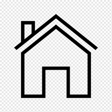

Фарбитный Юрий
Телефон
 +4915156783622
+4915156783622-
E-mail
farbitnuy@gmail.com
-
Адрес
 26452, Sande, Posener str. 20
| О себе | Я ищу работу на которой смогу максимально использовать использовать свои знания и навыки. С момента окончания моего штудиума, я работал по своей професси в разных производствах, с разными направлениями. Благодаря этому приобрел широкий спекрт знаний. Опытный пользователь ПК, есть опыт работы руководителем.Я дружелюбный и неконфликтный, люблю справедливось и честность. |
|---|
| 1999-2001 | Лицей на базе Харьковского государственного национального университета строительсва и архитектуры |
|---|---|
| 2001-2006 | Харьковский государственный национальный университет строительсва и архитектуры |
| 2006 | Диплом специалиста |
| 2023 | Deutschkurs VHS |
| 2023 | Online JavaScript |
| Языки: | Русский, Украинский, Английский(A1), Немецкий(A2) |
| 2014-2022 | Сервисметалл компания по производству запастных частей для Лифтов
Должность начальник отдела. Задания: - управление отделом; - работа с финансами; - внешние продажи; - менеджер по закупкам; - работа с различным металлообрабатывающим оборудованием; - гибка, рубка, резка, пробивка, мехобработка; - организация технологического маршрута изготовления изделий; - Разработка проектно-конструкторской документаци |
|---|---|
| 2006-2014 | Инжиниринговая фирма ТЭП-Союз.
Должность инженер 2 категории Задания: - разработка проектной документации; - работа с компьютерными сетями; - работа с системами автоматизированного проектирования; - деловая переписка; - документооборот; |
| 2005-2006 | Итернет-провайдер PSN
Техник-монтажник Задания: - прокладка интернет сетей на базе витой пары; - настройка роутеров; - настройка операционных систем для рабты в сети; |
| Опыт в IT | Знания в IT:
- Frontend developer, JavaScript, HTML, CSS; - построение компьютерных сетей; - опыт работы с серверами, доменами; - Системы управления сайтом CMS; - SEO для поисковой системы Google; - Компьютерные системы Windows, Linux Ubuntu. |
|---|---|
Метало-обработка |
Имею знания в металообработке. Технологии обработки металлов: гибка, резка, мехобработка, сварка и т.д.. Работа с нержавеющими и обычными сталями, а также цветными металлами. мокрая покраска и порошковая покраска. |
| Хобби |
Чтение книг, научных и исторических статей. Люблю фотографировать. Фотографирую архитектуру, природу, предметы. Увлекаюсь электроникой, компьютерами, аудиотехникой. Диагностика и ремонт автомобилей. Реставрация раличных вещей. |
|---|